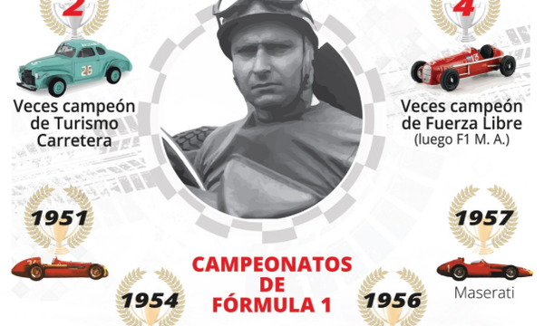

¿Sabías que...?
La Fórmula 1 posee más de siete décadas de historia y está llena de récords, innovaciones, circuitos históricos y acontecimientos que cambiaron la categoría.
Seleccioná uno de los temas para descubrir diferentes curiosidades.

Récords
¿Sabías que Fangio mantuvo durante décadas el récord de títulos mundiales?
Dato extra